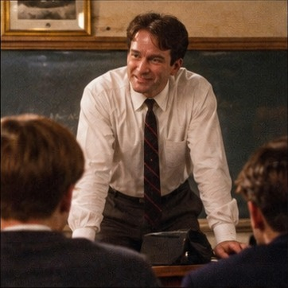
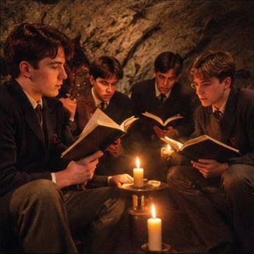
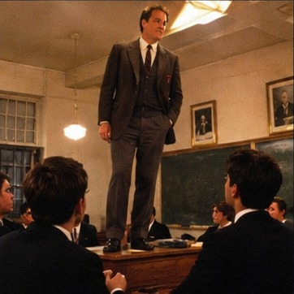
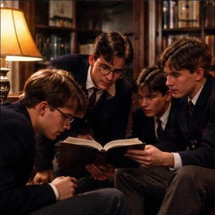
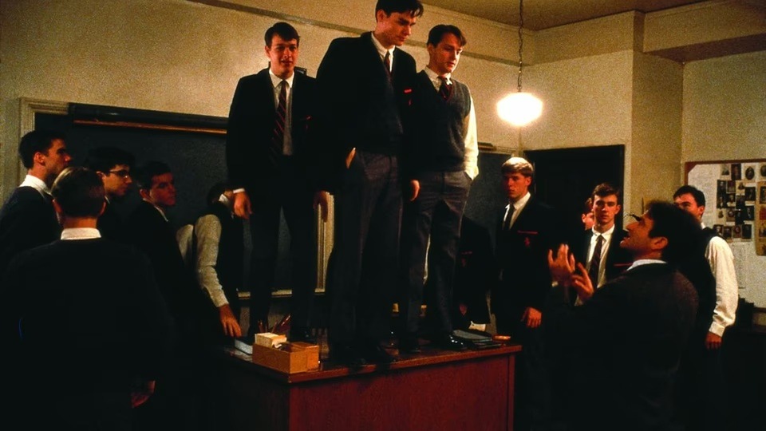

Memorable Moments
Dead Poets Society is filled with unforgettable moments that celebrate poetry, friendship, courage, individuality, and the importance of following your dreams.
Explore some of the most inspiring and memorable scenes from this classic movie.

Carpe Diem — Seize the Day
John Keating encourages his students to make the most of their lives and appreciate every opportunity they receive.

The Dead Poets' Secret Meetings
The students secretly gather to read poetry, share their thoughts, and express themselves away from the strict school environment.

John Keating's Classroom Lessons
Through his unusual teaching methods, John Keating encourages students to question traditional ideas and think independently.
Neil Perry's Passion for Acting
Neil discovers his love for acting and experiences the excitement of following his personal dreams.

The Poetry Reading Moments
The students discover the beauty of poetry and learn to express their feelings, imagination, and individuality.

O Captain! My Captain!
In one of the most emotional moments of the movie, the students stand on their desks to show their respect and gratitude to John Keating.
Explore More
Want to learn more about the inspiring people behind these memorable moments? Visit our other pages.
Back to HomeMeet the Characters